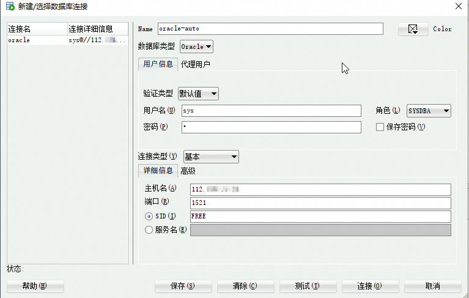

🌟 服务简介
Oracle数据库是一种功能强大、可靠性高的关系型数据库管理系统，为企业提供了广泛的数据管理和处理能力。
🚀 部署流程
-
访问计算巢OracleDB社区版部署链接，按提示填写部署参数：

-
参数填写完成后可以看到对应询价明细，确认参数后点击下一步：确认订单。
-
确认订单完成后同意服务协议并点击立即创建进入部署阶段。
-
等待部署完成后进入服务实例详情页。

-
复制链接地址并远程链接数据库：
访问Oracle SQL Developer页面，选择所需版本进行下载并安装。
安装完成后，连接Oracle数据库，如下图所示。 
📚 使用指南
更多用法请参考OracleDB官网文档。
© 2009-2022 Aliyun.com 版权所有